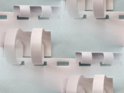

Previous Chapter: Creating Menus
Events and Binds
Introduction
 A Tkinter application runs most of its time inside an event loop, which is entered via the mainloop method. It waiting for events to happen. Events can be key presses or mouse operations by the user.Tkinter provides a mechanism to let the programmer deal with events. For each widget, it's possible to bind Python functions and methods to an event.
widget.bind(event, handler)
If the defined event occurrs in the widget, the "handler" function is called with an event object. describing the event.
#!/usr/bin/python3
# write tkinter as Tkinter to be Python 2.x compatible
from tkinter import *
def hello(event):
print("Single Click, Button-l")
def quit(event):
print("Double Click, so let's stop")
import sys; sys.exit()
widget = Button(None, text='Mouse Clicks')
widget.pack()
widget.bind('<Button-1>', hello)
widget.bind('<Double-1>', quit)
widget.mainloop()
Let's have another simple example, which shows how to use the motion event, i.e. if the mouse is moved inside of a widget:
from tkinter import *
def motion(event):
print("Mouse position: (%s %s)" % (event.x, event.y))
return
master = Tk()
whatever_you_do = "Whatever you do will be insignificant, but it is very important that you do
it.\n(Mahatma Gandhi)"
msg = Message(master, text = whatever_you_do)
msg.config(bg='lightgreen', font=('times', 24, 'italic'))
msg.bind('<Motion>',motion)
msg.pack()
mainloop()
Every time we move the mouse in the Message widget, the position of the mouse pointer will be printed. When we leave this widget, the function motion() is not called anymore.
Events
Tkinter uses so-called event sequences for allowing the user to define which events, both specific and general, he or she wants to bind to handlers. It is the first argument "event" of the bind method. The event sequence is given as a string, using the following syntax:<modifier-type-detail>The type field is the essential part of an event specifier, whereas the "modifier" and "detail" fields are not obligatory and are left out in many cases. They are used to provide additional information for the chosen "type". The event "type" describes the kind of event to be bound, e.g. actions like mouse clicks, key presses or the widget got the input focus.
| Event | Description |
|---|---|
| <Button> | A mouse button is pressed with the mouse pointer over the widget.
The detail part specifies which button, e.g.
The left mouse button is defined by the event <Button-1>, the middle button
by <Button-2>, and the rightmost mouse button by <Button-3>.
<Button-4> defines the scroll up event on mice with wheel support and and <Button-5> the scroll down. If you press down a mouse button over a widget and keep it pressed, Tkinter will automatically "grab" the mouse pointer. Further mouse events like Motion and Release events will be sent to the current widget, even if the mouse is moved outside the current widget. The current position, relative to the widget, of the mouse pointer is provided in the x and y members of the event object passed to the callback. You can use ButtonPress instead of Button, or even leave it out completely: |
| <Motion> | The mouse is moved with a mouse button being held down. To specify the left, middle or right mouse button use <B1-Motion>, <B2-Motion> and <B3-Motion> respectively. The current position of the mouse pointer is provided in the x and y members of the event object passed to the callback, i.e. event.x, event.y |
| <ButtonRelease> | Event, if a button is released. To specify the left, middle or right mouse button use <ButtonRelease-1>, <ButtonRelease-2>, and <ButtonRelease-3> respectively. The current position of the mouse pointer is provided in the x and y members of the event object passed to the callback, i.e. event.x, event.y |
| <Double-Button> | Similar to the Button event, see above, but the button is
doubble clicked instead of a single click.
To specify the left, middle or right mouse button use <Double-Button-1>,
<Double-Button-2>, and
<Double-Button-3> respectively. You can use Double or Triple as prefixes. Note that if you bind to both a single click (<Button-1>) and a double click (<Double-Button-1>), both bindings will be called. |
| <Enter> | The mouse pointer entered the widget. Attention: This doesn't mean that the user pressed the Enter key!. <Return> is used for this purpose. |
| <Leave> | The mouse pointer left the widget. |
| <FocusIn> | Keyboard focus was moved to this widget, or to a child of this widget. |
| <FocusOut> | Keyboard focus was moved from this widget to another widget. |
| <Return> | The user pressed the Enter key. You can bind to virtually all keys on the keyboard: The special keys are Cancel (the Break key), BackSpace, Tab, Return(the Enter key), Shift_L (any Shift key), Control_L (any Control key), Alt_L (any Alt key), Pause, Caps_Lock, Escape, Prior (Page Up), Next (Page Down), End, Home, Left, Up, Right, Down, Print, Insert, Delete, F1, F2, F3, F4, F5, F6, F7, F8, F9, F10, F11, F12, Num_Lock, and Scroll_Lock. |
| <Key> | The user pressed any key. The key is provided in the char member of the event object passed to the callback (this is an empty string for special keys). |
| a | The user typed an "a" key. Most printable characters can be used as is. The exceptions are space (<space>) and less than (<less>). Note that 1 is a keyboard binding, while <1> is a button binding. |
| <Shift-Up> | The user pressed the Up arrow, while holding the Shift key pressed. You can use prefixes like Alt, Shift, and Control. |
| <Configure> | The size of the widget changed. The new size is provided in the width and height attributes of the event object passed to the callback. On some platforms, it can mean that the location changed. |